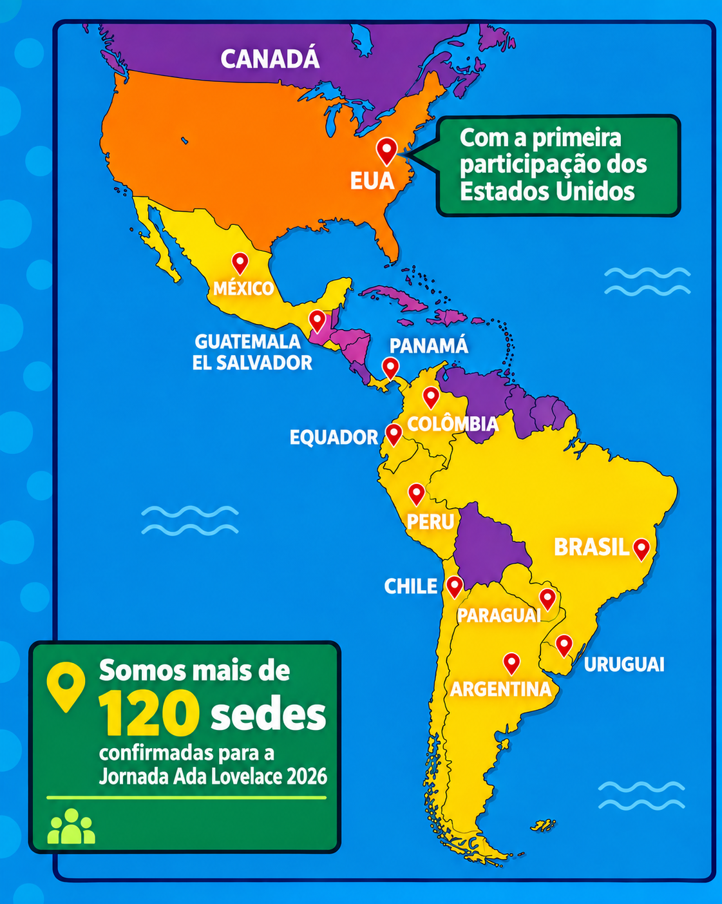
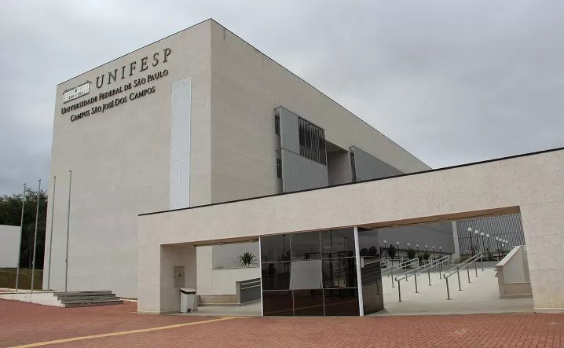

Quem somos
Um grupo da Unifesp que acredita que ciência também é lugar de menina.
O projeto
O Ada Lovelace Day é uma celebração que homenageia Ada Lovelace, considerada uma das pioneiras da programação, e busca reconhecer e incentivar a participação de meninas e mulheres nas áreas de Ciência, Tecnologia, Engenharia e Matemática (STEM).
A Jornada nasceu na Argentina, em 2022, com o objetivo de aproximar meninas das áreas de Ciência, Tecnologia, Engenharia e Matemática (STEM). Desde então, a iniciativa vem crescendo e atualmente reúne instituições de diferentes países da América Latina em uma rede de atividades voltadas ao incentivo à participação feminina nas áreas STEM. No Brasil, a organização nacional da Jornada está a cargo do Comitê Temático Mulheres na Matemática Aplicada e Computacional da Sociedade Brasileira de Matemática Aplicada e Computacional (SBMAC). Em São José dos Campos, esta será a primeira realização da Jornada, tendo como sede o Museu Interativo de Ciências (MIC).

Nossa participação na Jornada
O Ada Lovelace Day: 5ª Jornada Latino-Americana de Oficinas STEM para Meninas é um evento de alcance latino-americano que busca incentivar a participação de meninas nas áreas de Ciência, Tecnologia, Engenharia e Matemática (STEM). Em 2026, a UNIFESP participa como uma das instituições organizadoras, contribuindo para ampliar o acesso, a representatividade e o interesse de meninas pela ciência e pela tecnologia.

Venha fazer parte da Jornada
Inscreva sua menina na sede da Unifesp.